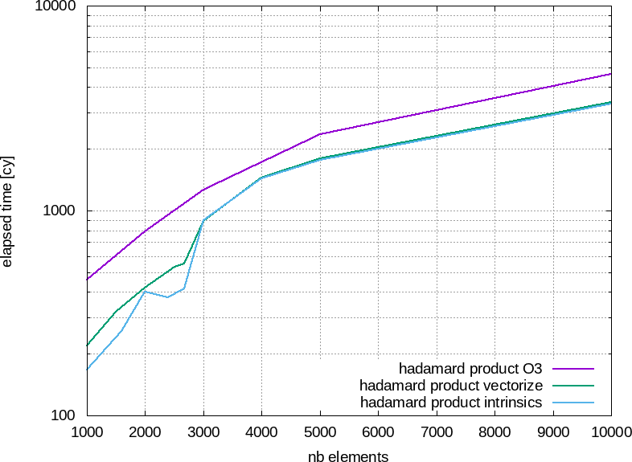

6.6.3.8 : The performances with Intrinsics


Left panel : total averaged time for the hadamard_product function. Right panel : averaged time to compute one single element.
| Previous Compilation |
Parent Manual vectorization (by Intrinsic functions) |
Outline | Next Conclusion on vectorization |
Left panel : total averaged time for the hadamard_product function. Right panel : averaged time to compute one single element.
| Previous Compilation |
Parent Manual vectorization (by Intrinsic functions) |
Outline | Next Conclusion on vectorization |